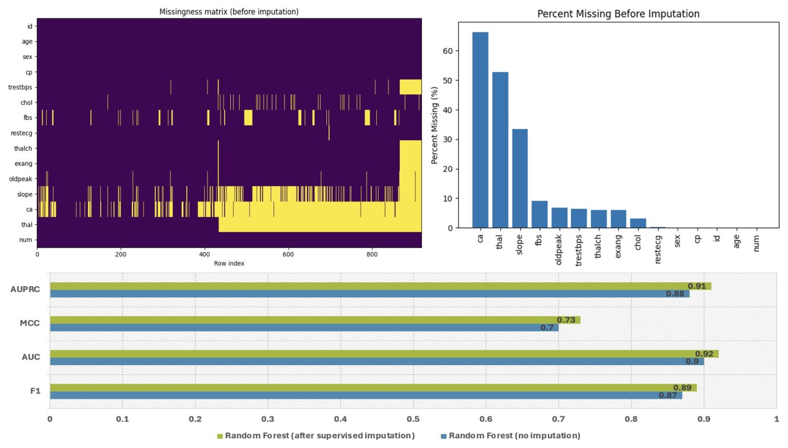
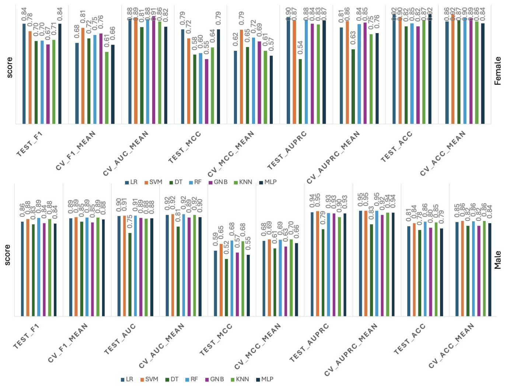
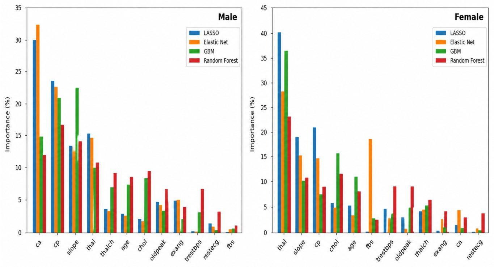
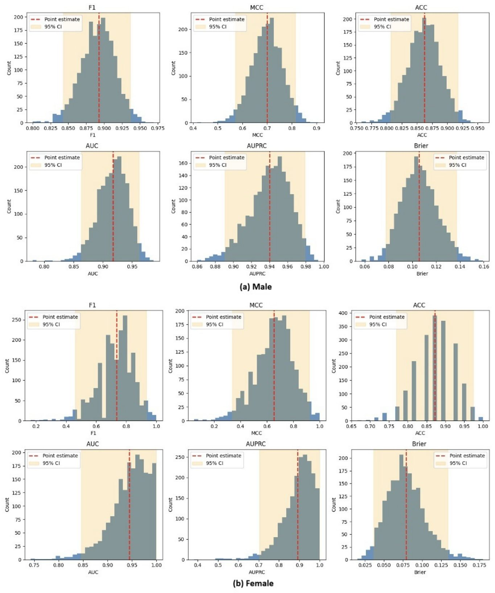

Жүрек ауруларының қаупін болжайтын жасанды интеллект жүйесі

Дәстүрлі қауіп шкалалары әртүрлі топтарда жиі қателіктер жібереді және болжамның сенімсіздігін ескермейді. Зерттеушілер болжамның дәлдігі мен факторлардың себеп-салдары байланысын біріктіретін жаңа жүйе әзірледі. Бұл әдіс жүрек-қан тамырлары ауруларының қаупін сенімдірек бағалауға мүмкіндік береді. Нәтижесінде медициналық шешімдерді қабылдаудың сапасы айтарлықтай артады.
Басты ойлар
- Кездейсоқ орман моделі 0.90-нан жоғары ROC-AUC нәтижесін көрсетті.
- Гибридті импутация классификация сапасын жақсартты.
- Ерлер мен әйелдер үшін негізгі қауіп факторларының айырмашылығы анықталды.
Толығырақ
Жүрек-қан тамырлары аурулары жаһандық деңгейде өлім-жітімнің негізгі себебі болып қала береді. Қолданыстағы клиникалық шкалалар сызықтық параметрлерге ғана сүйенеді және гетерогенді топтарда өз дәлдігін жоғалтады. Осы кемшіліктерді жою үшін авторлар болжамның анықсыздығын бағалайтын және биомаркерлерді зерттейтін жаңа жүйені ұсынды. Бұл тәсіл деректерді талдаудың сенімділігін арттырады.
Зерттеу барысында 918 қатысушының, оның ішінде 725 ер адам мен 193 әйелдің мәліметтері қолданылды. Жетіспейтін деректер MICE және кездейсоқ орман әдістері арқылы өңделді. Болжамдардың белсіздігі бутстрап және энтропия әдістерімен өлшенді. Себеп-салдарлық байланыстарды анықтау үшін екі мәрте машиналық оқыту және Causal Forest әдістері қолданылды.
Нәтижелер кездейсоқ орман моделінің ROC-AUC мәні 0.90-нан асатын ең тұрақты көрсеткіш көрсеткенін дәлелдеді. Деректерді жетілдіру арқылы F1-көрсеткіші 0.89-ға дейін өсті. Себептерді талдау барысында ірі тамырлар саны, ST сегментінің көлбеуі және стенокардия басты қауіп факторлары екені анықталды, олар жынысқа байланысты ерекшеленді.
Шектеулер
Зерттеу шағын және жынысы бойынша біркелкі емес ретроспективті деректерге негізделгендіктен, тәуелсіз клиникалық тексеруді қажет етеді.
Мақаланың толық талдауы
Түйіндеме
Жүрек-қан тамырлары аурулары бүкіл әлем бойынша өлім-жітімнің басты себебі болып қала береді. Машиналық оқыту модельдері болжамдылықтың жоғары тиімділігін көрсетсе де, клиникалық тұрғыдан сенімді жасанды интеллект үшін маңызды болып табылатын белсіздікті бағалауға және жынысқа байланысты қауіп факторларын анықтауға жеткіліксіз көңіл бөлінді.
Биомаркерлер бойынша қауымдастық зерттеуін, түсіндірілетін жасанды интеллектті және жыныс бойынша стратификацияланған қауіпті бағалауды біріктіретін, белсіздікті ескеретін және түсіндіруге болатын жүрек-қан тамырлары ауруларын болжауға арналған машиналық оқыту жүйесін әзірлеу және бағалау.
Бұл ретроспективті бақылау зерттеуінде 725 ер адам мен 193 әйелді қоса алғанда, 918 қатысушыны қамтитын UCI Heart Disease деректер жинағы пайдаланылды. Демографиялық, клиникалық, зертханалық және физикалық жүктемеге байланысты айнымалылар талданды. Жетіспейтін мәндер MICE пен бақыланатын Random Forest импутациясын біріктіретін гибридті стратегия көмегімен шешілді.
Түсіндірме
Импутация — толық емес жазбаларды жоймай, барлық қолжетімді ақпаратты пайдалануға мүмкіндік беретін, деректер жинағындағы жетіспейтін немесе жоқ мәндерді қалпына келтіру немесе толтыру статистикалық әдісі.
Зерттеушілер жетіспейтін деректер мәселесін шешу үшін ансамбльдік машиналық оқыту стратегиясын әзірледі. Содан кейін стратификацияланған оқыту және сынақ бөліктері мен 5 мәртелі кросс-валидация көмегімен заманауи машиналық оқыту модельдері жасалып, бағаланды. Болжам жасау тиімділігі бірнеше бағалау метрикалары арқылы өлшенді. Белсіздік бутстреп ресемплинг, болжамдық энтропия және өзара ақпарат арқылы санмен есептелді. Жынысқа тән орташа көрсеткіштер мен қауіп факторларының ассоциациялық зерттеулерін бағалау үшін сызықтық қосарлы машиналық оқыту (Linear Double machine learning) және себеп-салдарлық орман қосарлы машиналық оқыту (Causal Forest double machine learning) қолданылды.
Random Forest ерлер мен әйелдер когорталарында ең күшті және тұрақты болжамдық тиімділікті көрсетті, ROC-AUC мәндері 0.90-нан асты және кросс-валидация көрсеткіштері жоғары болды. Гибридті импутация классификация тиімділігін жақсартып, F1-score көрсеткішін 0.87-ден 0.89-ға дейін және ROC-AUC мәнін 0.90-нан 0.92-ге дейін өсірді. Себеп-салдарлық қауымдастық зерттеуі негізгі қан тамырларының санын, ST сегментінің көлбеуін, талассемияны және физикалық жүктеме стенокардиясын жүрек ауруларының ең күшті анықтаушы факторлары ретінде анықтады, бұл ретте ерлер мен әйелдердің кіші топтары арасында айтарлықтай айырмашылықтар байқалды.
Маңызды
Random Forest моделі 0.90-нан жоғары ROC-AUC көрсеткішіне қол жеткізді, ал гибридті импутация бұл көрсеткішті 0.92-ге жеткізіп, жүрек-қан тамырлары ауруларының қауіп факторларындағы негізгі жыныстық айырмашылықтарды анықтады.
Болжамдық модельдеуді, белсіздікті бағалауды және қауымдастық зерттеуінің машиналық оқытуын біріктіру жүрек-қан тамырлары ауруларының қаупін бағалау үшін сенімді және клиникалық тұрғыдан түсінікті жүйені қамтамасыз етеді. Ұсынылып отырған тәсіл болжамдардың сенімділігін арттырады және бір уақытта жынысқа тән себеп-салдарлық тұрғыдан маңызды қауіп факторларын анықтайды, бұл дәл кардиология мен сенімді клиникалық жасанды интеллектті қолдайды.
Кіріспе
Жүрек-қан тамырлары аурулары мәселесінің өзектілігі және классикалық шкалалардың шектеулері
Жүрек-қан тамырлары аурулары (ЖҚТА) жаһандық деңгейдегі басты медициналық проблемалардың бірі болып қала береді: 2022 жылғы мәліметтер бойынша, бұл аурумен 500 миллионнан астам адам өмір сүреді, ал оған байланысты өлім-жітім шамамен 20 миллионды құрап, әлемдегі барлық өлімнің үштен біріне жуығын көрсетті. Америка Құрама Штаттарында ЖҚТА өлімнің негізгі себебі болып табылады және жыл сайын әрбір үшінші өлімге жауап береді. Коронарлық артерия ауруы (КАА) тамырлардың тарылуы немесе бітелуі, миокардтың қан ағымының төмендеуі және инфаркт, жүрек жеткіліксіздігі мен кенеттен болатын өлім сияқты ауыр салдарға әкелетін негізгі морбидтік фактор болып саналады. Бұл жүктеме семіздік, артериялық гипертония, диабет және темекі шегу сияқты өмір салтына байланысты қауіп факторларының өсуімен күшейе түседі. Патологиялар байқалмай дамитындықтан, оларды ерте анықтау мен қауіпті дәл болжау тиісті профилактика үшін өте маңызды.
Маңызды
> Жүрек-қан тамырлары аурулары 500 миллионнан астам адамды қамтып, жыл сайын 20 миллионға жуық өлімге әкеледі, ал олардың жасырын ағымы ерте диагноз қоюды қиындатады.
ЖҚТА қаупіне жас пен жыныс қатты әсер етеді: жылдар өте келе жүрек-қан тамырлары функциясының нашарлауы мен қауіп факторларының жиналуына байланысты бұл көрсеткіш екі жыныста да өседі. Ер адамдар қауіпке көбірек ұшырайды және ауру әйелдерге қарағанда шамамен 7–10 жыл ертерек дамиды. 2019 жылы жас бойынша стандартталған жаһандық ЖҚТА өлімі ерлерде 100 000 тұрғынға шаққанда 280.8-ді, ал әйелдерде 204.0-ді құрады. Бұл айырмашылық менопаузаға дейінгі әйелдердегі эстрогеннің қорғаныш әсерімен, сондай-ақ тамыр құрылымы мен түйішектердің түзілуіндегі жыныстық ерекшеліктермен түсіндіріледі. Қауіп факторлары өзгермейтін (жас, жыныс, генетика) және өзгеретін (гипертония, темекі шегу, гиподинамия) болып бөлінеді. Дегенмен, кеудедегі жайсыздық немесе бас айналу сияқты ерте белгілер жиі елеусіз қалып, диагноздың кешігуіне әкеледі.
Түсіндірме
> Өзгертілетін қауіп факторлары — бұл өмір салты мен денсаулық көрсеткіштері, оларды түзету арқылы аурудың алдын алуға болады.
Қауіпті бағалау әдетте клиникалық тесттер мен тағылып жүретін құрылғылар арқылы жүзеге асырылып, нәтижелер электронды медициналық жазбаларға енгізіледі, бірақ бұл деректер жиі құрылымдалмаған және шуларды қамтиды. ЖҚТА-ның экономикалық жүктемесі өте жоғары және АҚШ-тың өзінде тікелей шығындар мен өнімділік жоғалтуларын қоса алғанда 200 миллиард доллардан асады. Дәстүрлі болжау модельдеріне Framingham Risk Score, ASCVD және SCORE2 жатады, алайда бұл модельдер шектеулі демографиялық және зертханалық айнымалыларға негізделген және сызықтық байланыстарды болжайды. Бұл модельдер гетерогенді когорталарда, мысалы, азшылық топтар немесе жастар арасында өз тиімділігін жоғалтуы мүмкін.
Машинное обучение и поиск причинно-следственных связей с помощью Double Machine Learning
Есептеу қуаттарының артуы жүрек-қан тамырлары қаупін болжауда машиналық оқыту (МО) әдістерін, соның ішінде кездейсоқ тоғайларды (Random Forests, RF), градиенттік бустингті (Gradient Boosting Machines, GBM), тірек векторлар машиналарын (Support Vector Machines, SVM) және терең нейрондық желілерді қолдануды арттырды. Бұл әдістер сызықтық емес тәуелділіктер мен күрделі өзара әрекеттесулерді моделдей алады. Бірқатар зерттеулерде МО әдістерін қолдану арқылы алынған ROC қисығы астындағы аудан (AUC) көрсеткіштері 0.85-тен асқаны хабарланған. Осыған қарамастан, МО модельдерін күнделікті клиникалық тәжірибеге енгізу әлі де қиындық тудырады, себебі олар шағын ретроспективті деректерге негізделген және «қара жәшік» принципі бойынша жұмыс істейді.
Абайлаңыз
> «Қара жәшік» түріндегі МО модельдері жоғары AUC көрсетсе де, олардың түсініксіздігі және сыртқы валидацияның болмауы клиникалық сенімге кедергі келтіреді.
Интерпретация мәселесін шешу үшін медициналық білімге негізделген белгілерді инженерлеу, LASSO регуляризациясы және SHAP сияқты түсіндіру әдістері қолданылады, олар болжамға әрбір фактордың үлесін көрсетеді. Дегенмен, болжамды маңыздылық фактордың ауру қаупіне тәуелсіз себептік әсерін білдірмейді. Осы мақсатта мақалада негізгі предикторлардың себептік әсерін бағалау үшін Қос машиналық оқыту (Double Machine Learning, DML) әдісі қолданылады. Зерттеуде деректерді алдын ала өңдеу, жетіспейтін мәндерді толтыру, бірнеше МО модельдерін жасау және 5 мәртелі кросс-валидация кезеңдері орындалған. Тиімділік F1-ұпайы, MCC, дәлдік, ROC-AUC, AUPRC және Brier score арқылы бағаланып, Causal Forest DML жекелендірілген ЖҚТА қаупін бағалауға мүмкіндік берді.
Әдебиеттер шолуы
Жүрек-қан тамырлары аурулары (ЖҚТА) бүкіл әлем бойынша өлімнің негізгі себебі болып қала беретіндіктен, зерттеушілер олардың алдын алу, диагностикалау және басқару құралдарын жасауға көп жылдар арнады. Али және әріптестері ансамбльдік терең оқыту және белгілерді біріктіру техникасына негізделген жүрек ауруларын болжауға арналған ақылды денсаулық сақтау мониторингі жүйесін ұсынды. Олардың платформасы тағылатын датчиктерден жиналған физиологиялық деректерді электронды медициналық карталармен біріктіреді. Болжау сапасын арттыру үшін жүйе ақпараттың өсуіне негізделген белгілерді іріктеуді қолданды. Нәтижесінде LogitBoost мета-оқыту алгоритмімен жақсартылған ансамбльдік модель шамамен 98.5% дәлдікке қол жеткізді.
Түсіндірме
> Ансамбльдік оқыту — бұл бірнеше алгоритмдердің нәтижелерін біріктіру арқылы жеке модельге қарағанда әлдеқайда дәл және тұрақты болжам алу тәсілі.
Кориал және әріптестері хи-квадрат белгілерін іріктеуді көпшілік дауыс беру классификаторымен біріктіре отырып, ЖҚТА-ны ерте анықтауға арналған ансамбльдік жүйені ұсынды. Cleveland деректер базасынан 303 пациент жазбасы мен 13 клиникалық белгіні қолдана отырып, хи-квадрат әдісі ең маңызды бес белгіні анықтап, есептеу жүктемесін 50%-дан астам қысқартты. Дауыс беру ансамблі LR, RF, GNB және KNN классификаторларын біріктіріп, 92.11% дәлдік көрсетті. Ван және әріптестері 797 пациенттің деректерін қолдана отырып, ерте ишемиялық жүрек ауруы (ИЖА) қаупін болжау модельдерін жасады. LASSO және RF модельдері гиперурикемияны, созылмалы бүйрек ауруын және ұйқы артерияларының атеросклерозын ең маңызды предикторлар ретінде анықтады. RF моделі AUC көрсеткіші бойынша LASSO-дан асып түсті (0.91 және 0.84, статистикалық маңызды айырмашылықпен Z = 3.99, P < 0.05).
Дорраki және әріптестері UK Biobank деректерін қолдана отырып, ЖҚТА болжамын жақсартудағы психологиялық факторлардың рөлін зерттеді. Дәстүрлі қауіп факторлары ғана қолданылғанда модель 73.13% дәлдік көрсетсе, психикалық денсаулық көрсеткіштерін қосу дәлдікті 85.13%-ға дейін арттырды. Олаваде және әріптестері BESO алгоритмін біріктірген ИЖА болжауға арналған ML жүйесін ұсынды. RF моделі екі деректер базасында 90% және 92% дәлдік көрсетті. Негізгі предикторларға жүрек соғу жиілігі, жас, дене салмағының индексі, систолалық қан қысымы және типтік кеуде ауыруы кірді.
Абайлаңыз
> Зерттелген модельдердің көпшілігі нақты ретроспективті деректер жиынына негізделген, бұл олардың кең клиникалық тәжірибеде қолданылуын шектеуі мүмкін.
Данка және әріптестері XGBoost негізіндегі гибридті жүйені әзірлеп, Cleveland деректер базасында шамамен 95.45% дәлдікке, 92.86% сезімталдыққа және 100% ерекшелікке қол жеткізді. Али және әріптестері Kaggle деректерінде RF моделі 100% дәлдік көрсеткенін анықтады. Рабби және әріптестері VEMLA және BEMLA ансамбльдік модельдерін ұсынып, Cleveland базасында 92%, ал Framingham базасында 97% дәлдікке қол жеткізді. Талукдер және әріптестері деректерді теңестіру мен түсіндірілетін жасанды интеллект құралдарын біріктіретін HXAI-ML фреймворкін жасап, 98.78% дәлдікке қол жеткізді.
Маңызды
> Қолданыстағы зерттеулер негізінен классификация дәлдігі мен белгілерді іріктеуге бағытталған, алайда гендерлік айырмашылықтар, белгісіздікті бағалау және каузальды предикторлар жеткіліксіз зерттелген.
Әдебиеттер шолуынан көрініп тұргендей, көптеген жұмыстар гибридті ML жүйелері арқылы ЖҚТА болжау дәлдігін арттыруға бағытталған. Соған қарамастан, гендерлік қауіп факторлары, белгісіздікті бағалау және каузальды предикторлар әлі де аз зерттелген. Сондықтан алдын ала өңдеуді, сыныптарды теңестіруді және каузальды тәсілдерді біріктіретін кешенді жүйеге қажеттілік бар.
Әдістер
Жүрек ауруларының деректер жиыны
Зерттеуде жүрек-қан тамырлар аурулары бойынша Кливленд және Венгрия когорталарынан алынған құрылымдық клиникалық деректер жиынтығы пайдаланылды. Ол жүрек-қан тамырлар ауруларын бағалауда жиі қолданылатын демографиялық, физиологиялық және жүктемелік айнымалыларды қамтиды. Деректер жиынтығы жасы, жынысы, кеудедегі ауырсыну түрі, қысым, холестерин деңгейі, электрокардиографиялық көрсеткіштер және физикалық жүктемеге жауап сияқты негізгі предикторытарды қамтиды. Бірқатар айнымалылар клиникалық тұрғыдан анықталған қауіп факторларын көрсетеді: кеудедегі ауырсыну түрі симптоматиканы сипаттайды, ал максималды жүрек соғу жиілігі мен жүктеме стенокардиясы жүректің стресске функционалды жауабын білдіреді. Сарысулық холестерин және аш қарынға қандағы глюкоза сияқты зертханалық өлшеулер метаболизмдік қауіпті қамтиды, ал рентгеноскопия арқылы байқалатын ірі тамырлар саны және талассемия күйі жүректің и ischemic ауруының ауырлығын көрсетеді. Нәтиже айнымалысы жүрек ауруының болуы мен ауырлығын кодтайды, ал жіктеу модельдеуі үшін бұл айнымалы клиникалық маңызды аурудың бар-жоғын көрсету үшін екілік форматқа келтірілді. Барлық айнымалылардың толық сипаттамасы, анықтамалары мен диапазондары Кесте 1-де берілген.
Зерттеу дизайны
Бұл зерттеу жыныс бойынша стратификацияланған талдау мен жас ерекшеліктеріне ерекше назар аудара отырып, жүрек-қан тамырлар ауруларын болжауға арналған машиналық оқыту модельдерін әзірлеу және бағалау үшін қолжетімді клиникалық деректерді пайдалана отырып ретроспективті, бақылау дизайнын қолданды. Әдідологиялық негіз төрт біріктірылген компоненттен тұрды: (i) деректердің сыртқа кетуіне жол бермеу үшін бірыңғай бағандық құбыр желісі шеңберінде стандартталған алдын ала өңдеу; (ii) модельге тәуелсіз сенімді предикторатарды анықтау үшін LASSO, Elastic Net, GBM және RF көмегімен көп алгоритмді айнымалыларды таңдау; (iii) сызықтық, маржаға негізделген, ағашқа негізделген, ықтималдық, мысалға негізделген және нейрондық парадигмаларды қамтитын жеті бақыланатын жіктеуішті пайдалана отырып болжамды модельдеу — LR, SVM, DT, RF, GNB, KNN және MLP; (iv) жыныс бойынша стратификацияланған ішкі топтар арасындағы салыстырмалы өнімділікті бағалау.
Деректерді алдын ала өңдеу
Деректер жиынтығы демографиялық сипаттамаларды, зертханалық өлшеулерді және физикалық жүктеме көрсеткіштерін қоса алғанда, жүрек-қан тамырлар аурулары қаупін бағалауда әдетте қолданылатын құрылымдық клиникалық айнымалылардан тұрды. Екілік нәтиже айнымалысы жүрек ауруының бар (Y=1) немесе жоқ (Y=0) екенін көрсетті. Модельді әзірлеуге дейін барлық машиналық оқыту модельдері арасындағы үйлесімділікті қамтамасыз ету және әртүрлі белгілер масштабтары мен жоғалған деректерден туындайтын ықтимал ауытқуларды азайту үшін стандартталған алдын ала өңдеу құбыр желісі енгізілді.
Деректер сипаттамасы
Деректер жиынтығы жүрек ауруларын жіктеу мақсатында жиналған клиникалық және демографиялық өлшемдерді қамтыды. Толық когорта 918 қатысушыны қамтыды, олардың 725-і (79.0%) ер адамдар және 193-і (21.0%) әйелдер болды. Деректер жиынтығы жүрек ауруы бар және жоқ пациенттердің біршама теңгерімді арақатысын көрсетті: 918 қатысушының 508-іне (55.3%) жүрек ауруы диагнозы қойылды, ал 410-ы (44.7%) сауықтырылған бақылау тобын құрды. Жүрек ауруларының жыныстық ерекшеліктерін зерттеу үшін деректер ерлер мен әйелдердің ішкі топтарына стратификацияланды. Қатысушылар үш жас топтарына бөлінді: 29–39 жас (жас ересектер; n=80), 40–59 жас (орта жастағы ересектер; n=735) және 60–77 жас (егде жастағы ересектер; n=103).
Айнымалылар төрт үздіксіз предиктора — сарысулық холестерин (chol, мг/дл), физикалық жүктемеден туындаған ST депрессиясы (oldpeak), қол жеткізілген максималды жүрек соғу жиілігі (thalch, bpm) және тыныштық күйдегі қан қысымы (trestbps, мм рт. ст.) — және сегіз категориялық предиктораға топтастырылды: флюороскопия арқылы боялған ірі тамырлар саны (ca), кеудедегі ауырсыну түрі (cp), жүктеме стенокардиясы (exang), аш қарынға қандағы қант >120 мг/дл (fbs), тыныштық күйдегі электрокардиография нәтижелері (restecg), шыңғы жүктеме ST сегментінің көлбеуі (slope), талассемия (thal) және жүрек ауруының нәтижесі (target). Предикторлардың бірлескен таралуын зерттеу үшін үздіксіз айнымалылар ядролық тығыздық бағалаулары ретінде, ал категориялық айнымалылар жиілік саны ретінде көрсетілді (2-Сурет).
Орта жастағы ішкі топ барлық категориялық айнымалылар бойынша бақылаулардың көпшілігін құрады, бұл жүрек аурулары когорталарының күтілетін жас бөлінісіне сәйкес келеді. Үздіксіз айнымалылар жас топтары бойынша негізінен ұқсас орталық тенденцияларды көрсетті, бұл ретте егде жастағыларда thalch төменге, ал oldpeak жоғарыға жылжыды. Категориялық предикторы нақты жыныстық айырмашылықтарды көрсетті: атап айтқанда, ер адамдар барлық категориялық айнымалылардың деңгейлері бойынша әйелдерден асып түсті және аурудың нәтижесі (target) әрбір жас қабатында ер адамдарда жиірек кездесті. Ер (n=725) және әйел (n=193) қатысушылар арасындағы айтарлықтай теңгерімсіздік келесі бөлімдерде келтірілген жыныс бойынша стратификацияланған модельдеу тәсіліне негіз болды.
Маңызды
918 қатысушы қатысқан зерттеуде (79% ер адамдар) айқын жыныстық теңгерімсіздік анықталды, бұл ерлер мен әйелдер үшін физиологиялық көрсеткіштердің жастық өзгерістерін ескере отырып, бөлек модельдер құруды талап етті.
Жетіспейтін деректерді өңдеу
Жүрек-қан тамыр аурулары (ЖҚА) деректер жиынтығының күрделілігіне байланысты стандартты импутация әдістері тиімсіз болды. Сондықтан авторлар айнымалылар түріне бейімделген гибридті стратегияны қолданды. Үздіксіз айнымалылар (жасы, қан қысымы, холестерин, жүрек соғу жиілігі және ST депрессиясы) үшін MICE (тізбекті теңдеулер арқылы көптік импутация) әдісі қолданылды. Категориялық айнымалылар (жынысы, қандағы қант, стенокардия, кеуде ауруының түрі, ЭКГ нәтижелері, тамырлар саны және талассемия) үшін бақыланатын импутация қолданылды: әрбір белгі үшін қолда бар деректер негізінде кездейсоқ орман (RF) регрессиясы оқытылды және жетіспейтін мәндер болжанған сынып белгілерімен толтырылды.
Маңызды
Гибридті тәсіл (MICE және RF) деректердің дискретті құрылымын сақтап, айнымалылар арасындағы көпөлшемді байланыстарды ескеруге мүмкіндік берді.
Түсіндірме
MICE — әрбір айнымалыны басқалары негізінде дәйекті түрде модельдеу арқылы бос орындарды толтыратын итеративті әдіс.
Белгілерді масштабтау
Барлық үздіксіз предикторлар Z-балл нормализациясы арқылы стандартталды: x^* = \fracx - µ\sigma. Бұл әдіс LASSO және Elastic Net сияқты модельдер үшін маңызды, себебі оларда коэффициенттер шамасы белгілердің масштабына тікелей тәуелді.
Оқыту және тестілеу жиынтықтарына бөлу
Деректер 80:20 қатынасында (random seed 42) бөлінді. Стратификацияланған іріктеу әдісі қолданылды: P(Ytrain = 1) ≈ P(Ytest = 1). Барлық алдын ала өңдеу операциялары (импутация, масштабтау, кодтау) бірыңғай конвейерге біріктірілді, мұнда параметрлер тек оқыту жиынтығынан есептеліп, тест жиынтығына қолданылды. Бұл деректердің ағып кетуіне (data leakage) жол бермейді.
Абайлаңыз
Деректердің ағып кетуіне жол бермеу үшін барлық трансформация параметрлері тек оқыту жиынтығынан алынуы тиіс.
Модельдеу және классификация
x_i белгілер векторы жас, холестерин деңгейі, қан қысымы және физикалық жүктеме кезіндегі стенокардия сияқты клиникалық тәуекелді бағалауда стандартты болып табылатын демографиялық, физиологиялық және функционалдық көрсеткіштерді қамтиды. Мақсат — пациенттерді төмен және жоғары тәуекел топтарына бөлу үшін P(y_i = 1 / x_i) шартты ықтималдықты бағалайтын F: R^p → [0, 1] функциясын үйрету. Модель архитектурасына байланысты F(·) сызықтық предиктор, сызықтық емес түрлендіру немесе шешім қабылдау ережелерінің ансамблі болуы мүмкін. Біз клиникалық предикторлар мен жүрек-қан тамыр аурулары (ЖҚТА) нәтижелері арасындағы күрделі байланысты ескеру үшін параметрикалық және параметрикалық емес ML модельдерінің кең спектрін қолдандық.
Сызықтық регрессия (LR) өзінің түсініктілігі мен мүмкіндіктер қатынасын бағалау қабілетіне байланысты базалық ықтималдық моделі ретінде пайдаланылды. Тірек векторлар машинасы (SVM) ядролық түрлендірулер арқылы сызықтық емес шешім шекараларын модельдеу үшін қолданылды. Шешім ағаштары (DT) мөлдір иерархиялық құрылымы үшін, ал кездейсоқ ормандар (RF) болжам тұрақтылығын арттыру және дисперсияны азайту үшін енгізілді. Гаусс нақты Байес классификаторы (GNB) шартты тәуелсіздік болжамы астында тиімді базалық шешім болды, ал k-ең жақын көршілер (KNN) алгоритмі клиникалық белгілердің ұқсастығына негізделіп пациенттерді классификациялауға мүмкіндік берді. Көп қабатты перцептрондар (MLP) сызықтық емес өзара әрекеттесулерді анықтау үшін, ал градиенттік бустинг (GBM) қателерді дәйекті түрде азайту арқылы болжам дәлдігін арттыру үшін қолданылды.
Маңызды
Зерттеу ЖҚТА тәуекелін бағалау үшін сызықтық модельдерден бастап, күрделі сызықтық емес ансамбльдер мен нейрондық желілерге дейінгі модельдерді қамтиды. [!tip] Ансамбльдік әдістер (RF, GBM) бірнеше әлсіз алгоритмдердің болжамдарын біріктіріп, бір модельге қарағанда дәлірек және тұрақты нәтиже береді.
Гиперпараметрлерді оңтайландыру
Модельдердің жалпылау қабілетін арттыру үшін оқу жиынтығында кросс-валидация арқылы гиперпараметрлерді баптау жүзеге асырылды. LR үшін регуляризация параметрлері мен айыппұл функциялары оңтайландырылды. SVM-де ядро параметрлері мен шекараларды регуляризациялау бапталды. Ағашқа негізделген әдістерде (DT, RF, GBM) ағаш тереңдігі, эстиматорлар саны және түйіндерді бөлу критерийлері таңдалды. KNN үшін көршілер саны мен қашықтық метрикалары, ал MLP үшін жасырын қабаттар архитектурасы, активтендіру функциялары және оңтайландыру параметрлері таңдалды. Негізгі критерий ROC-AUC көрсеткіші болды.
Айыппұлды айнымалыларды таңдау стратегиясы
Ишемиялық жүрек ауруының ең ақпаратты предикторларын анықтау үшін біз төрт архитектураны әзірледік: LASSO, Elastic Net, GBM және RF. LASSO және Elastic Net мультиколлинеарлықты басқару және автоматты таңдау үшін пайдаланылды. GBM және RF алдын ала құрылымдық болжамдарсыз күрделі сызықтық емес байланыстарды анықтау үшін қолданылды. ЖҚТА патофизиологиясындағы жыныстық айырмашылықтарды ескере отырып, бүкіл когорта биологиялық жыныс бойынша стратификацияланды және модельдер ерлер мен әйелдер үшін тәуелсіз оқытылды. Талдау конвейері Python 3.4 және scikit-learn 1.8 кітапханасы арқылы жүзеге асырылды.
Абайлаңыз
Жыныс бойынша стратификацияны қолдану өте маңызды, себебі ЖҚТА даму механизмдері ерлер мен әйелдерде айтарлықтай ерекшеленуі мүмкін.
LASSO логистикалық регрессиясы
LASSO әдісі айнымалыларды таңдау үшін таңдалды, себебі оның L₁-айыппұлы азырақ ақпаратты предикторлардың коэффициенттерін нөлге айналдырып, оларды модельден шығарып тастайды. Айыппұл деңгейі ROC-AUC-ті максималдау арқылы бес еселік кросс-валидация көмегімен анықталды. Модель SAGA алгоритмі (максимум 5000 итерация) көмегімен оқытылды. Үздіксіз предикторлар стандартталды, ал категориялық айнымалылар dummy-кодтау арқылы кодталды. Айнымалылардың маңыздылығы соңғы коэффициенттердің абсолютті мәні бойынша анықталды; көп деңгейлі белгілер үшін мәндер жинақталды және модельдер арасында салыстыру үшін 100%-ға дейін нормаланды.
ElasticNet логистикалық регрессиясы
Болжамды айнымалылар арасындағы мультиколлинеарлық ықтималдығын ескере отырып, жүрек ауруын болжау үшін реттелген айнымалыларды таңдау мақсатында Elastic Net әдісі қолданылды. LASSO-дан айырмашылығы, Elastic Net L₁ және L₂ айыппұлдарды біріктіреді, бұл болжамдар корреляцияланған кезде модельдің тұрақтылығын жақсартады және маңызды емес коэффициенттерді нөлге дейін қысқарту қабілетін сақтайды. Араластыру параметрі 0.5 болып белгіленді, бұл екі айыппұл компонентіне де тең салмақ берді, ал жалпы регуляризация күші ROC қисығы астындағы аумақты барынша арттыратын бес еселік кросс-валидация арқылы оңтайландырылды. Модель SAGA оңтайландыру алгоритмі көмегімен ең көбі 5000 итерациямен сәйкестендірілді. Айнымалылардың маңыздылығы LASSO моделі үшін сипатталған процедура бойынша анықталды.
Түсіндірме
Elastic Net — бұл маңызды белгілерді таңдайтын және олардың арасындағы өзара байланысты реттейтін LASSO мен Ridge әдістерінің гибридті қосындысы.
GBM белгілерінің маңыздылығы
Параметрлік емес регуляризация әдістерінен басқа, ансамбльдік тәсіл арқылы айнымалылардың маңыздылығын бағалау үшін GBM қолданылды. GBM қатарынан тайыз шешім ағаштарын біріктіретін ансамбльдік әдіс болып табылады, мұнда әрбір келесі ағаш ағымдағы ансамбльдің қалдық қателеріне бейімделеді және функция кеңістігінде градиенттік түсу арқылы шығын функциясын минимизациялайды. Модель воспроизводимость қамтамасыз ету үшін фиксирленген кездейсоқ тұқыммен (random_state = 42) scikit-learn ішіндегі GBM регрессоры арқылы жүзеге асырылды, 100 бустинг кезеңі, 0.1 оқыту жылдамдығы, максималды ағаш тереңдігі 3 және субдискретизация үлесі 1.0 пайдаланылды. LASSO үшін сипатталған алдын ала өңдеу конвейері қолданылды. Айнымалылардың маңыздылығы барлық ағаштар бойынша әрбір болжаушыға жататын түйіндік қоспалардың жиынтық төмендеуі ретінде өлшенді.
RF белгілерін таңдау
GBM ансамбльдік тәсілін толықтыра отырып, тәуелсіз ағашқа негізделген стратегия арқылы айнымалылардың маңыздылығын қосымша бағалау үшін RF регрессоры қолданылды. GBM-нен айырмашылығы, RF бірнеше шешім ағаштарын параллельді түрде құрады, олардың әрқайсысы оқыту деректерінің бутстрэп таңдамасында өсіріледі, ал ағаштар арасындағы корреляцияны азайту және жалпылауды жақсарту үшін әр бөлінуде болжаушылардың кездейсоқ ішкі жиынтығы қарастырылады. Модель scikit-learn-де 500 шешім ағашы (n_estimators = 500) және фиксирленген кездейсоқ тұқым (random_state = 42) көмегімен іске асырылды, барлық басқа гиперпараметрлер әдепкі мәндерінде қалдырылды. LASSO үшін қолданылған алдын ала өңдеу қолданылды. Айнымалының маңыздылығы барлық ағаштар бойынша әрбір болжаушыға жататын Джини қоспасының орташа төмендеуі реті ында анықталды.
Маңызды
Белгілерді таңдау және олардың маңыздылығын бағалау үшін үш модель (Elastic Net, 5000 итерациясы / 100 кезеңі бар GBM және 500 ағашы бар RF) пайдаланылды, бұл талдаудың тұрақтылығын қамтамасыз етті.
Бағалау көрсеткіштері
Модельдің жұмысы стандартты жіктеу метрикалары көмегімен бағаланды:
Дәлдік
Дәлдік (Accuracy) = \frac{TP + TN}{TP + TN + FP + FN}
F1-ұпайы
F1-өлшемі (F1) = \frac{2 \cdot ext{Дәлділік} \cdot ext{Толықтылық}}{ ext{Дәлділік} + ext{Толықтылық}}
Мэтьюс корреляция коэффициенті (MCC)
Мэттьюс корреляция коэффициенті (MCC) = \frac{TP \cdot TN - FP \cdot FN}{\sqrt{(TP + FP)(TP + FN)(TN + FP)(TN + FN)}}
ROC-AUC (ROC қисығы астындағы аудан)
ROC-AUC модельдің барлық шешім табалдырықтары бойынша кластарды ажырату қабілетін өлшейді: AUC = \int_{1}^{0} ext{TPR}( ext{FPR}^{-1}(t)) \, dt
Брайер ұпайы
Брайер ұпайы ықтималдық болжамдарының дәлдігін бағалайды: Брайер ұпайы (Brier Score) = \frac{1}{n} \sum_{i=1}^{n} (y_i - \hat{p}_i)^2
ЖСА болжамы контекстінде жоғары қауіпті пациенттерді анықтау үшін сезімталдық өте маңызды, ал ROC-AUC жалпы ажырату өнімділігін көрсетеді. F1-ұпайы дәлдік пен толықтықты теңестіреді, әсіресе теңгерімсіз деректер жиынында. MCC тіпті кластар теңгерімсіз болған кезде де жіктеу сапасының сенімді өлшемін қамтамасыз етеді, ал Брайер ұпайы ықтималдық калибрлерін бағалайды.
Өнімділікті бағалауға арналған белгісіздікті бағалау
Бұл зерттеуде yi \in \0, 1\ ЖСА жоқтығын немесе бар екенін көрсететін болғандықтан, ең жақсы жұмыс істейтін ML моделінің өнімділігі accuracy, F1-score, MCC, ROC-AUC, AUPRC және Brier score көмегімен бағаланды. Өнімділік бағаларындағы белсіздікті санмен өрнектеу үшін сынқұрылғы жиынында бутстрэп қайта таңдамасы орындалды. Әрбір бутстрэп репликаты үшін m = 1, \dots, M метрикалар қайта есептелді: \\hat heta(m)\m=1M. Эмпирикалық 95% сенім интервалдары бутстрэп таралуының 2.5 және 97.5 перцентильдерінен алынды. Болжамдық белсіздік ағаш бойынша ықтималдық бағаларының дисперсиясымен сипатталды:
\hat{\sigma}^2(x_i) = \frac{1}{B} \sum_{b=1}^{B} (p_b(x_i) - \bar{p}(x_i))^2
мұнда B — ағаштардың жалпы саны, p_b(x_i) — b-ші ағаштан алынған бақылау үшін болжанған ықтималдық, ал \barp(xi) — барлық ағаштар бойынша орташа болжанған ықтималдық. Болжамдық энтропия H(xi) = -\barp(xi) \log \barp(xi) - (1 - \barp(xi)) \log (1 - \barp(xi)) ретінде есептелді, ал эпистемикалық белсіздік өзара ақпарат көмегімен анықталды.
Абайлаңыз
Бутстрэп және ағаш дисперсиясы арқылы белсіздікті бағалау модельдің болжамдардағы сенімсіздігін анықтауға көмектеседі, бірақ ол сынақ жиынының сапасына тәуелді.
Биомаркерлердің әсерін талдау бойынша себеп-салдарлық байланыс зерттеуінің әдістері: Linear DML
Әрбір клиникалық белгінің жүрек ауруының ықтималдығына тигізетін себеп-салдарлық әсері Linear DML көмегімен бағаланды. Бұл кездейсоқ орманның көмегімен байқалған араласуларды икемді түрде түзеткеннен кейін әрбір белгінің орташа емдеу әсерін (ATE) бөліп алатын ішінара сызықтық регрессия құрылымы болып табылады. Әрбір белгі кезекпен емдеу айнымалысы ретінде, ал қалғандары ковариаталар ретінде қарастырылды. Нәтиже де, емдеу де бес еселік кросс-фиттинг арқылы ковариаталар жиынтығында қалдықтандырылды, ал ATE нәтиже қалдықтарын емдеу қалдықтарына регрессиялау арқылы қалпына келтірілді, бұл асимптотикалық түрде дұрыс сенім интервалдары мен p-мәндерін берді. Модельдер ерлер (n = 725) және әйелдер (n = 193) кіші топтары үшін бөлек бағаланды.
CausalForestDML (Себеп-салдарлық орман DML)
Ем әсерлерінің әртүрлілігін бағалау үшін авторлар CausalForestDML әдісін қолданды, бұл стандартты қосарлы машинами оқыту (DML) жүйесінің параметрлік емес кеңейтілімі болып табылады. Ол сызықтық модельді себептік орманмен (causal forest) алмастырып, әсерлердің ковариаталар арасында икемді түрде өзгеруіне мүмкіндік береді. Әрбір клиникалық белгі кезекпен әсер етуші айнымалы ретінде, ал қалған белгілер ковариата ретінде қарастырылды. Нәтиже мен әсерді шудан тазарту үшін кездейсоқ орман (Random Forest) негізіндегі nuisance-модельдер және бес еселік айқас тексеру (five-fold cross-fitting) қолданылды, содан кейін себептік орман жекелеген қатысушылар үшін шартты орташа әсер ету өлшемдерін (CATE) есептеп шығарды.
Түсіндірме
CausalForestDML — бұл кездейсоқ ормандар мен себептік талдауды біріктіретін озық әдіс, ол қатер факторларының жасырын, сызықтық емес байланыстарын қатаң шектеулерсіз табуға көмектеседі.
Ұсынылған орташа әсер ету өлшемдері (ATE) әрбір жыныстық топ ішіндегі CATE көрсеткіштерін орташалау арқылы алынды. Бұл икемділік қарапайым сызықтық модель жіберіп алуы мүмкін күрделі және топқа тән себеп-салдарлық заңдылықтарды анықтауға мүмкіндік береді, бірақ мұның өтемі ретінде сенімділік интервалдары біршама кеңейеді. Модельдер ерлер (n = 725) және әйелдер (n = 193) топтары үшін бөлек есептелді.
Абайлаңыз
Талдау ерлер (n = 725) және әйелдер (n = 193) сияқты әртүрлі көлемдегі топтар үшін жеке жүргізілді, ал қорытындылардың сенімділігі ескерілмеген факторлардың жоқтығы мен таралулардың қиылысу шарттарына тәуелді.
Ескерілмеген ығыстырушы факторлар болмаған жағдайда, сондай-ақ таралулардың қиылысуы мен жартылай сызықтық шарттары сақталғанда, ATE бағалаулары әрбір белгінің жүрек аурулары қатеріне қосатын орташа себептік маңызды үлесін білдіреді. ATE көрсеткіштері Python тіліндегі EconML пакетінде қолжетімді LinearDML және CausalForestDML әдістері арқылы есептелді.
Нәтижелер
Сипаттамасы Ерлер OR(95%CI) Әйелдер OR(95%CI)
Жыныс және басқа параметрлер бойынша түзетілген талдау ерлер мен әйелдердегі клиникалық белгілер мен жүрек-қан тамырлары ауруларының (ЖҚТА) қаупі арасындағы байланыс күшінде айырмашылықтар бар екенін көрсетті (2-кесте). Мысалы, ангиография кезіндегі боялған тамырлар саны (ca) екі жыныста да жоғары мүмкіндіктерді көрсетті: ерлер үшін OR = 7.42 (95% CI: 4.94–11.7) және әйелдер үшін OR = 2.56 (95% CI: 1.64–4.17). Кеуде тұсындағы ауырсынулар (cp: ерлерде OR = 3.01 [2.48–3.69], әйелдерде OR = 4.44 [2.71–7.83]), сондай-ақ ST сегментінің депрессиясы (oldpeak және slope) екі жыныста да үлкен рөл атқарады. Керісінше, холестерин деңгейі (chol) бұл тұрғыда айтарлықтай сызықтық әсер көрсетпеді (екі жыныс үшін де OR = 1.00).
Жас тобы
Жас бойынша стратификацияланған логистикалық регрессиялық талдау әйелдерге қарағанда ерлерде жас пен жүрек аурулары арасындағы байланыстың күштірек екенін анықтады. 29–39 жастағы ересектер референтті топ ретінде алынды. 40–59 жастағы ерлерде ЖҚТА даму ықтималдығы едәуір жоғары болды (OR = 2.36, 95% CI: 1.37–4.14, p = 0.002), ал 60–77 жастағы топта бұл қауіп тіпті күшейді (OR = 6.95, 95% CI: 3.76–13.1, p < 0.001). 40–59 жастағы әйелдерде жаспен айтарлықтай байланыс байқалмады (OR = 1.41, 95% CI: 0.43–6.41, p = 0.60), ал 60–77 жастағы үлкенірек әйелдерде статистикалық маңыздылық шегіндегі өсу байқалды (OR = 3.86, 95% CI: 1.11–18.1, p = 0.051). Авторлардың пікірінше, мұндай айырмашылықтар эстрогеннің қорғаныш әсерімен және коронарлық анатомия ерекшеліктерімен түсіндіріледі.
Маңызды
> Жас ерлерде ЖҚТА қаупімен тығыз байланысты (60–77 жастағы топта OR 6.95 дейін), ал әйелдерде қауіптің айтарлықтай өсуі кейінірек басталып, әлсіздеу көрінеді.
Модельдің өнімділігі және болжамды талдау
ЖҚТА болжау үшін түрлі машиналық оқыту модельдері сынақтан өткізілді (4-сурет). Ансамбльдік әдістер, әсіресе кездейсоқ орман (Random Forest, RF) екі жыныс когортасында да жоғары ROC-AUC, AUPRC және F1-score мәндерімен тұрақты жоғары нәтижелер көрсетті. Логистикалық регрессия (LR) да бәсекеге қабілетті нәтижелер көрсетіп, сызықтық байланыстардың маңыздылығын растады. Әйелдер когортасында RF кросс-валидация тұрақтылығымен 0.90 шамасындағы ROC-AUC және AUPRC мәндеріне қол жеткізді. Ерлерде де RF пен LR тамаша көрсеткіштерді көрсетті, ал қарапайым Байес (GNB) пен k-жақын көршілер (KNN) модельдері үлкен өзгергіштікке ие болды. Сынақ пен кросс-валидация нәтижелерінің сәйкестігі тым қатты бейімделіп кетудің (overfitting) жоқтығын көрсетеді.
Түсіндірме
> ROC-AUC — модельдің екі түрлі классты (мысалы, аурудың бары/жоғы) ажырату қабілетін сипаттайтын метрика.
Ерлер тобы
Ерлер кіші тобында белгілерді іріктеу төрт классификатор (LASSO, ElasticNet, GBM және RF) көмегімен жүргізілді (5-сурет). Төрт модельдің барлығында төрт негізгі болжаушы фактор ерекшеленді: ca (зақымдалған тамырлар саны), cp (кеуде ауруының түрі), slope (ST сегментінің көлбеуі) және thal (таллий тестінің нәтижелері). Мысалы, ca LASSO-да (шамамен 30%) және ElasticNet-те (шамамен 32%) ең жоғары маңыздылыққа ие болды, cp RF-те (шамамен 17%) және slope GBM-де (шамамен 23%) басым болды. Үздіксіз белгілер ортаңғы орындарды иеленді, ал бинарлы белгілер (restecg, fbs) ең аз салмаққа ие болды. Төрт тәсілдің сапасын бағалау барысында (3-кесте) олардың барлығы 90.4% бен 91.6% аралығындағы auROC мәндерін көрсетті.
Әйелдер топшасы
Әйелдер топшасында айнымалылардың маңыздылық рейтингі ерлер топшасынан айтарлықтай ерекшеленді (5-Сурет). Барлық төрт жіктеуіш бойынша thal ең күшті предикатор ретінде анықталды: оның маңыздылығы RF моделі бойынша шамамен 23%-дан LASSO моделі бойынша 40%-ға дейін жетті — бұл ерлер топшасындағы салмағынан едәуір жоғары. slope мен cp көрсеткіштері көптеген модельдерде екінші және үшінші орындарға ие болып (10–21%), ерлерде байқалған маңыздылық деңгейін сақтап қалды. Ең көзге түсетін гендерлік айырмашылық сарысулық холестерин (chol) деңгейінің жоғары маңыздылығы болды, ол әйелдерге арналған GBM (≈16%) және RF (≈12%) модельдеріндегі ең үздік төрт предикатордың қатарына енді, ал ерлерде бұл көрсеткіштің маңызы шамалы ғана болды.
Маңызды
Әйелдер топшасында thal негізгі предикатор болып табылды (40%-ға дейінгі маңыздылықпен), ал модельдердің жалпы ажырату қабілеті auROC бойынша 90.0%-дан 94.8%-ға дейін жоғары деңгейде қалды (RF моделі 94.8% көрсеткішімен ең жақсы нәтиже көрсетті).
Тағы бір маңызды жаңалық — ElasticNet моделінде fbs көрсеткішінің айқын көрінуі (≈19%), ал ерлер моделінде бұл көрсеткіш нолге жуықтап, қалған үш әйелдер моделінің басты предикаторлары арасында мүлдем болмады; бұл аталмыш байланыстың модельге тән екенін немесе шектеулі әйелдер іріктемесіндегі аз ғана жағдайларға байланысты екенін көрметді. Керісінше, LASSO мен ElasticNet модельдерінде ерлер арасында үздік үштікке кіретін ca көрсеткіші әйелдер топшасында алғашқы ондыққа да енбеді. Бұл нәтижелер жүректің инемиялық ауруындағы гендерлік айырмашылықтар туралы әдебиеттермен сәйкес келеді: әйелдерде менопаузадан кейін жалпы холестерин мен LDL холестерин деңгейі көтеріледі, ал эстрогеннің жүрек-қан тамырларын қорғайтын әсерінің жоғалуы ерлермен салыстырғанда жүрек-қан тамырлары ауруларының қаупін арттырады. Сонымен қатар, ангиография кезінде әйелдерде ерлерге қарағанда обструктивті емес ИБС жиірек анықталатыны белгілі: жүрек инемиялық ауруы күдігімен коронарлық ангиографиядан өткен әйелдердің шамамен 60–70%-ында обструктивті емес патология анықталса, ерлерде бұл көрсеткіш шамамен 30%-ды құрайды. Бұл көрініс әйелдердегі тамырлардың төменгі балдары мен обструктивті зақымданулардың аз болуынан көрініс табады [39], бұл ca көрсеткішінің әйелдер топшасында неге аз болжамдық салмаққа ие болғанына клиникалық түсініктеме береді. Жинақтай келгенде, бұл бақылаулар клиникалық предикаторлардың жүрек ауруы қаупіне қосатын салыстырмалы үлесі жынысқа байланысты әр түрлі болатынын және гендерлік стратификацияланған модельдер клиникалық маңызды патофизиологиялық айырмашылықтарды жақсырақ көрсете алатынын білдіреді.
Әртүрлі машиналық оқыту негізіндегі белгілерді таңдау тәсілдерін қолдану арқылы әйелдер топшасы үшін модельдің жұмысы 3-Кестеде жинақталған. Жалпы өнімділік ерлер топшасында байқалған мәндермен салыстырғанда ұқсас немесе біраз жоғары болды, auROC мәндері 90.0%-дан 94.8%-ға дейін өзгерді. RF негізіндегі белгілерді таңдау тәсілі ең жоғары auROC (94.8%) мәніне қол жеткізді, одан кейін ElasticNet (93.8%) мен GBM (93.1%) тұр. Сезгіштік (Sensitivity) 60.0% бен 80.0% аралығын құрады, ал ерекшелік (Specificity) барлық тәсілдер бойынша тұрақты түрде жоғары (89.7%–96.6%) болып қалды, бұл оң нәтижелерді анықтауға қарағанда сау адамдарды анықтаудағы жоғары тиімділікті білдіреді. Бұл нәтижелер әйелдердің іріктеме көлемінің аздығын және сыныптардың ықтимал теңгерімсіздігін көрсетуі мүмкін, сондықтан топшаға тән көрсеткіштерді түсіндіру кезінде сақтық таныту қажет.
Жыныстар бойынша салыстыру
Екі топшаны салыстырғанда бірнеше маңызды тұстарды атап өткен жөн. Біріншіден, cp, slope, thal, chol, oldpeak және trestbps сияқты айнымалылар екі жыныс үшін де үздік ондыққа енді, бұл предикаторлардың ортақ негізі бар екенін көрсетеді. Екіншіден, ca ерлерде ғана, ал restecg әйелдерде ғана ерекше маңызды болды, бұл әрі қарай зерттеуді қажет ететін ықтимал жынысқа тән биомаркерлерді меңзейді. Үшіншіден, әйелдерде жалпы ажырату (auROC) ұқсас немесе жоғары болғанымен, сезгіштік пен ерекшелік арасындағы тепе-теңдік жыныстар бойынша айтарлықтай ерекшеленді — ерлер модельдері сезгіштікке, ал әйелдер модельдері ерекшелікке басымдық берді. Бұл нәтижелер жүрек ауруларына арналған гендерлік стратификацияланған болжамды модельдерді әзірлеуді қолдайды, өйткені бірыңғай біріктірілген модель предикаторлардың маңыздылығы мен жұмыс сипаттамаларындағы клиникалық маңызды айырмашылықтарды жасырып қалуы мүмкін.
Өнімділіктің анықталмағанын бутстрэп арқылы бағалау
6-Суретте ерлер мен әйелдердің жүрек-қан тамырлары аурулары когорталарындағы RF моделі өнімділігінің бутстрэпке негізделген анықталмағандық квантификациясы (UQ) көрсетілген. Тест жиынын қайталап бутстрэп арқылы қайта іріктеу көмегімен F1-score, MCC, ACC, ROC-AUC, precision-recall қисығы астындағы аудан (AUPRC) және Брайер ұпайының (Brier score) таралымдары бағаланды. Нүктелік бағалаулар эмпирикалық 95% сенімділік интервалдарымен бірге көрсетілген.
Жалпы алғанда, RF моделі екі когортада да күшті болжамдық өнімділікті көрсетті, ROC-AUC пен AUPRC үшін салыстырмалы түрде тар анықталмағандық интервалдары жіктеудің тұрақтылығын растайды. Ерлер когортасы жоғары F1-score, MCC және ROC-AUC мәндерінің маңызында шоғырланған бутстрэп таралымдарымен тұрақты түрде жоғары болжамдық дәлдікті көрсетті, бұл қайта іріктелген деректер жиындарында берік жіктеу тұрақтылығын білдіреді. Брайер ұпайының таралымы салыстырмалы түрде төмен мәндерге бағытталған, бұл жақсы ықтималдық калибрлерін көрсетеді.
Абайлаңыз
Әйелдер когортасында F1-score пен MCC үшін байқалған кеңірек сенімділік интервалдары іріктеме көлемінің аздығымен және әйелдер топшасындағы үлкен гетерогенділікпен байланысты.
Әйелдер когортасында да модель күшті ажырату қабілетін көрсетті, әсіресе ROC-AUC пен AUPRC үшін, дегенмен ерлер топшасына қарағанда F1-score пен MCC бойынша кеңірек бутстрэп таралымдары байқалды. Бұл өскен вариабельділік деректер көлемінің аз болуын және әйелдер топшасындағы үлкен біртекті еместікті көрсетеді. Осы өзгермелілікке қарамастан, сенімділік интервалдары клиникалық тұрғыдан қабылдан диапазондарда қалып, модельдің сенімділігі сақталғанын көрсетті.
Айта кету керек, ROC-AUC пен AUPRC екі когортада да ең кіші салыстырмалы анықталмағандықты көрсетті, бұл рейтингке негізделген ажыратудың F1-score және MCC сияқты шекті мәнге тәуелді жіктеу метрикаларына қарағанда тұрақтырақ болғанын білдіреді. Керісінше, салыстырмалы түрде төмен және тұрақты Брайер ұпайлары болжамды ықтималдықтардың жеткілікті түрде калибрленгенін растайды. Жиынтықтай келгенде, бұл нәтижелер ұсынылған RF құрылымы гендерлік стратификацияланған жүрек-қан тамырлары аурулары популяцияларында өлшенетін анықталмағандық бағалауларын сақтай отырып, күшті және қайталанатын болжамдық өнімділікке қол жеткізгенін көрсетеді.
Биомаркерлар әсерін талдауға арналған гендерлік ерекшеліктерді зерттеу
Ерлер мен әйелдер топшаларында жүрек ауруларымен сенімді, шатастырушы факторларға (конфаундерлерге) түзетілген қауымдастықтары бар айнымалыларды анықтау үшін жыныс бойынша жіктелген Causal Forest DML және сызықтық LinearDML талдаулары қолданылды. Бұл тәсіл себеп-салдар бағытын растау үшін емес, бақылау деректерінің араластырушы құрылымы ескерілгеннен кейін қандай болжамды көрсеткіштердің маңызды байланыстарды сақтайтынын бағалау үшін пайдаланылды. 7-суретте көрсетілгендей, ерлер арасында ca, slope, thal және exang екі бағалау алгоритмі аясында да ең күшті түзетілген байланыстарды көрсетті, бұл құрылымдық коронарлық обструкция мен ишемиялық бұзылулардың басқа белгілермен корреляциялық қиылысуына қарамастан жүрек ауруы қаупімен берік байланысқанын білдіреді.
Биомаркерлар әсерін талдауға арналған гендерлік ерекшеліктерді зерттеу (жалғасы)
Әйелдер арасында thal мен slope екі әдіс бойынша да өз маңыздылығын тұрақты түрде сақтап қалды, бұл ишемияға қатысты жолдардың әйелдердегі жүрек-қан тамырлары қаупі үшін негізгі болып қалатынын растайды; сонымен қатар exang тек параметрлік LinearDML аясында ғана маңызды болды, бұл параметрлік емес Causal Forest DML дәлдігін шектеген әйелдердің шағын таңдама көлеміне (n = 193) байланысты оның байланысы thal мен slope-ке қарағанда аз тұрақты болғанын көрсетеді. Дегенмен, ca әйелдерде маңызды болмады, бұл тамыр патологиясындағы жыныстық айырмашылықтарды немесе әйелдер санының аз болуына (n = 193) байланысты төмендеген статистикалық қуатты көрсетуі мүмкін.
Түсіндірме
Causal Forest DML және LinearDML — көптеген жасырын және айқын факторларды ескере отырып, белгілердің әсерін бағалайтын заманауи машиналық оқыту әдістері.
Жас, холестерин, тыныштық күйдегі қан қысымы және аш қарынға қандағы қант мөлшерін қоса алғанда, дәстүрлі қауіп факторлары нөлді қамтитын сенімділік интервалдарымен елеусіз түзетілген байланыстарды көрсетті, бұл олардың стандартты модельдердегі болжамды маңыздылығы тәуелсіз байланысты емес, негізінен жалпы корреляциялық құрылымды көрсететінін куәландырады. Causal Forest DML өзгерімпаздық сипатына сай LinearDML-ге қарағанда кеңірек сенімділік интервалдарын тудырды, алайда екі әдіс те бірдей маңызды белгілерге келіп тіреліп, осы байланыстардың сенімділігін арттырды. Бұл талдау бақылау деректеріне негізделгендіктен, өлшенбеген конфаундерлерді толығымен жоққа шығару мүмкін емес екенін және бұл нәтижелер орныққан себеп-салдарлық әсерлер ретінде емес, түзетілген қауымдастықтар ретінде түсіндірілуі тиіс екенін атап өткен жөн.
Абайлаңыз
Зерттеу бақылау деректеріне негізделген, сондықтан анықталған байланыстар дәлелденген себеп-салдарлық әсерлер емес, түзетілген қауымдастықтар болып табылады, ал әйелдер таңдамасының аздығы статистикалық қуатты төмендетеді.
Калибрлеу және клиникалық пайдалылық
Калибрлеу қисықтары болжамды ықтималдықтар мен байқалған оқиғалар жиілігі арасында ерлер мен әйелдер когорталарында жалпы жақсы сәйкестікті көрсетті, бұл модельдің жүрек-қан тамырлары ауруларының шынайы қаупін шынайы көрсететінін білдіреді. Клиникалық жағдайларда ықтималдықтың дәл бағалары өте маңызды, өйткені қауіпті асыра бағалау негізсіз фармакологиялық араласуларға әкелуі мүмкін, ал кем бағалау ерте алдын алу шараларын жіберіп алуға соқтыруы мүмкін. 6-суретте көрсетілген және бутстрэп көмегімен бағаланған Brier ұпайлары ерлер топшасында шамамен 0.10 және әйелдер топшасында 0.07 төңірегінде шоғырланып, модельдің жүрек-қан тамырлары аурулары қаупін жүйелі түрде асырмай немесе кемітпей, сенімді және жақсы калибрленген ықтималдық бағаларын беретінін растады.
Калибрлеу және клиникалық пайдалылық (жалғасы)
Тесттік жиынтық пен кросс-валидация өнімділігі бағалары арасындағы сәйкестік, әсіресе Random Forest (RF) сияқты ансамбльдік әдістер үшін, ұсынылған моделдеу тәсілінің жыныс бойынша жіктелген популяциялардағы жалпы қолданылуы мен қайталанатындығын одан әрі нығайтады. Сонымен қатар, жыныс бойынша жіктелген моделдеу тәсілі ерлер мен әйелдер арасындағы жүрек-қан тамырлары патофизиологиясындағы белгіленген айырмашылықтарды ескеру арқылы клиникалық қолданысты жақсартады, бұл болжанған қауіп бағалары клиникалық маңызды гетерогенділікті жасырып қалуы мүмкін бірыңғай біріктірілген модельден алынбай, әрбір пациент топшасына бейімделуін қамтамасыз етеді.
Маңызды
Модельдер тамаша калибрлеуді көрсетті (Brier ұпайы ерлерде ~0.10 және әйелдерде ~0.07), бұл олардың сыртқы валидациядан кейін жүрек-қан тамырлары аурулары скринингіне біріктірілу мүмкіндігін растайды.
Жалпы алғанда, бұл нәтижелер әзірленген тәсілді клиникалық тәжірибеде жүрек-қан тамырлары ауруларының скринингі мен ерте анықтау жұмыс процестеріне әлеуетті біріктіруді қолдайды, дегенмен енгізер алдында қосымша сыртқы валидация мен клиникалық бағалау қажет.
Түсіндірме
Brier ұпайы (Brier score) — ықтималдық болжамдарының дәлдігін бағалайтын метрика, мұнда нөлге жақын мәндер модельдің мінсіз калибрленгенін білдіреді.
Талқылау
Бұл зерттеу жүрек-қан тамырлар ауруларын (ЖҚТА) болжау үшін машиналық оқытуды, белсіздікті бағалауды, түсіндірмелі жасанды интеллектті және себеп-салдарлық байланыс параметрлерін біріктіретін кешенді жасанды интеллект жүйесін әзірлеп, бағалады. Когортаға 918 қатысушы (725 ер адам және 193 әйел) кірді. Нәтижелер озық тәсілдер ауру механизмдері мен жеке тәуекелді бағалау бойынша түсінікті мәліметтер бере отырып, тамаша болжау қабілетін қамтамасыз ететінін көрсетеді. Ұсынылған жүйе бұрынғы жұмыстардың шектеулерін жояды.
Зерттеудің негізгі жетістігі гибридті импутация стратегиясы арқылы қол жеткізілген айтарлықтай жақсарту болды. ca, thal және slope сияқты жетіспейтін айнымалылар MICE үздіксіз импутациясы және RandomForest (RF) бақыланатын категориялық импутациясы арқылы өңделді. Импутациядан кейін RF көрсеткіштері барлық метрикалар бойынша жақсарды: F1-score 0.87-ден 0.89-ға, ROC-AUC 0.90-нан 0.92-ге, MCC 0.70-тен 0.73-ке, ал AUPRC 0.88-ден 0.91-ге өсті.
Барлық жіктеуіштер арасында RF ең жақсы нәтиже көрсетті. Ерлер тобында RF ең жоғары auROC (91.6%) мәніне қол жеткізді (сезімталдығы 90.2%, ерекшелігі 75.5%). Әйелдер тобында RF 94.8% auROC көрсетті, бірақ сезімталдық төменірек (60.0%) болды. Логистикалық регрессия (LR) да ерлер мен әйелдерде сәйкесінше 90.7% және 90.0% auROC көрсетіп, жоғары бәсекеге қабілеттілігін байқатты. Белгілердің маңыздылығын талдау ерлер мен әйелдердегі ортақ және гендерлік ерекшеліктері бар тәуекел факторларын анықтады. Ерлерде ca, cp, slope және thal маңызды болжаушылар қатарына кірсе, әйелдерде thal басым предикторы болды (LASSO бойынша 40%, RF бойынша ~23%). Бустрэп көмегімен жүргізілген белсіздікті талдау ROC-AUC үшін сенімділік интервалдарын көрсетті, алайда әйелдерде таңдама көлемінің кішілігіне (n=193) байланысты шашыраңқылық байқалды.
Маңызды
Гибридті импутация мен RF ЖҚТА болжау дәлдігін жақсартып (ROC-AUC 0.92, әйелдерде 94.8%), гендерлік айырмашылықтарды анықтады.
Күшті жақтары, шектеулері және валидация
Жұмыстың маңызды үлестерінің бірі ЖҚТА қаупін бағалауға себеп-салдарлық машиналық оқыту (DML) әдістерін біріктіру болды. Гендерлік стратификацияланған DML талдаулары ерлерде ca, slope, thal және exang мәндерін ең күшті қауымдастықтар ретінде анықтады, ал әйелдерде thal мен slope маңыздылығын сақтап қалып, ca маңызды емес болып шықты. Қызығы, дәстүрлі тәуекел факторлары (жас, холестерин, қан қысымы) конфаундерлер ескерілгеннен кейін елеусіз орташа әсер көрсетті.
Түсіндірме
Себеп-салдарлық машиналық оқыту (DML) — қарапайым статистикалық корреляциялар мен шынайы себеп-салдарлық тәуекел факторларын ажырататын әдіснама.
Шектеулер қатарына ретроспективті бақылау деректерін пайдалану және әйелдердің кішірек іріктемесі кіреді, бұл болашақта үлкенірек көп орталықты популяцияларда сыртқы валидацияны қажет етеді. Сондай-ақ себеп-салдарлық талдау бақылау деректерінде толық тексерілмейтін болжамдарға сүйенеді. Болашақта проспективті клиникалық енгізу, электрондық медициналық жазбалар мен тағылатын датчиктерді біріктіру жоспарлануда.
Абайлаңыз
Зерттеу ретроспективті деректерге негізделген және әйелдер саны аз (n=193), сондықтан себеп-салдарлық тұжырымдар проспективті клиникалық валидацияны талап етеді.
Қоғамдық денсаулық сақтауға енгізу
Қоғамдық денсаулық сақтау тұрғысынан бұл нәтижелердің маңызы зор. Бірінші кезекте, жоғары болжамдық дәлдігі бар қауіпті топтағы тұлғаларды анықтау ерте араласуға және мақсатты алдын алу шараларына жол ашып, жүрек-қан тамырлары аурулары мен өлім-жітімді әлеуетті түрде азайтады. Екіншіден, гендерлік ерекшеліктерге байланысты себеп-салдар факторларын анықтау дербестендірілген профилактика стратегиялары мен дәл кардиология бастамаларын дамытуға қолдау көрсетеді.
Маңызды
Қауіпті топтарды дұрыс анықтау және гендерлік айырмашылықтарды ескеру ерте профилактика мен жекелендірілген тәсіл арқылы жүрек-қан тамырлары сырқаттанушылығын төмендетуге көмектеседі.
Үшіншіден, белсіздік пен болжамсыздықтарды ескеретін болжамдар дәрігерлердің сенөмін арттырып, жасанды интеллект жүйелерін күнделікті медициналық тәжірибеге жауапкершілікпен енгізуге ықпал етеді, өйткені бұл бағалаулар дәрігерлерге қосымша тексеруді немесе мұқият талдауды қажет ететін болжамдарды анықтауға көмектеседі. Соңында, физикалық жүктеме туындататын исхемиялық реакциялар сияқты өзгертуге болатын қауіп факторларының себептерін анықтау қоғамдық денсаулық сақтау ресурстарын скринингке, профилактикаға және өмір салтын өзгертуге тиімдірек бөлуге көмектеседі. Машиналық оқыту бірнеше қауіп факторларын біріктіру және деректердегі заңдылықтарды анықтау арқылы дәстүрлі жүрек-қан тамырлары қаупін болжауды толықтыра алады, бірақ оны алмастыра алмайды, дегенмен кеңінен клиникалық қолдану ең алдымен шынайы жағдайларда болашақты бағалаудан өтуіне байланысты болады.
Абайлаңыз
Машиналық оқыту алгоритмдерін күнделікті медициналық тәжірибеге кеңінен енгізу нақты клиникалық жағдайларда міндетті түрде алдын ала тексеруден өтуді талап етеді.
Қорытынды
Жүрек-қан тамырлары аурулары жаһандық денсаулық сақтаудағы басты сын-қатерлердің бірі болып қала береді, бұл дұрыс, сенімді және клиникалық тұрғыдан түсінікті болжамды модельдердің қажеттілігін көрсетеді. Бұл зерттеу құрылымдық клиникалық деректер негізінде жүрек-қан тамырлары ауруларының қаупін болжау үшін гибридті деректерді алдын ала өңдеуді, озық машиналық оқытуды, белсіздікті бағалауды, түсіндірмелі жасанды интеллектті және себеп-салдарлық маңыздылықты біріктіретін кешенді жасанды интеллект жүйесін әзірледі.
Үздізбелі айнымалыларға арналған тізбекті теңдеулер арқылы көптік импутацияны және санаттық айнымалылар үшін кездейсоқ орман импутациясын біріктіретін гибридті стратегия ақпарат сапасын арттырып, болжам сапасын жақсартты, мұнда F1-score көрсеткіші 0.87-ден 0.89-ға дейін, ал ROC-AUC 0.90-нан 0.92-ге дейін өсті.
Түсіндірме
Импутация (MICE және RF) — медициналық карталардағы жетіспейтін мәндерді статистикалық әдістер арқылы қалпына келтіру процесі.
Сыналған машиналық оқыту модельдерінің ішінде кездейсоқ орман (RF) алгоритмі ерлер мен әйелдер топтарында тұрақты түрде ең жоғары нәтижелерді көрсетті. Ол 0.90-нан жоғары ROC-AUC мәндерін, жоғары AUPRC, F1-score, Мэтьюс корреляция коэффициентін (MCC) және жақсы калибрлеуді қамтамасыз етіп, кросс-валидация кезінде тұрақтылықты сақтады. Бутстрэп негізіндегі белсіздікті бағалау болжамдардың сенімді екенін дәлелдеді.
Маңызды
Әзірленген жүйе ROC-AUC көрсеткішін 0.92-ге, ал F1-score көрсеткішін 0.89-ға жеткізді, сонымен қатар кездейсоқ орман екі жыныс үшін де ең жоғары болжам тұрақтылығын көрсетті.
Бұл зерттеудің басты үлестерінің бірі жүрек-қан тамырлары қаупін бағалауға себеп-салдарлық машиналық оқытуды біріктіру болды. LinearDML және CausalForestDML модельдері себепші факторларды қарапайым статистикалық байланыстардан ажыратып, ірі қон тамырларының саны, ST сегментінің көлбеуі, талассемия күйі және жүктеме стенокардиясын жүрек аурулары қаупінің басты көрсеткіштері ретінде анықтады.
Түсіндірме
Себеп-салдарлық машиналық оқыту (Causal ML) — факторлар мен ауру арасындағы жай ғана байланысты емес, нақты емдік әсер етуге болатын шынайы себептерді анықтайтын тәсіл.
Анықталған жыныстық айырмашылықтар жалпы популяциялық модельге сүйенбей, жекелендірілген қауіпті бағалауға көшудің маңыздылығын көрсетеді. Болашақ зерттеулер бұл жүйені кең ауқымды көп орталықты когорталар мен проспективті клиникалық сынақтар арқылы тексеруі тиіс.



Суреттің толық сипаттамасы
3-сурет: Жүрек аурулары деректер жинағында бақыланатын толықтыруға дейінгі және кейінгі жетіспейтін деректер құрылымы және болжамды өнімділікті салыстыру. Жоғарғы сол жақ панельде бірнеше айнымалыларда айтарлықтай жетіспеушілікті көрсететін жетіспеушілік матрицасы көрсетілген. Жоғарғы оң жақ панельде жетіспеушіліктің ең жоғары үлесі бар айнымалылар үшін пайыздық көрсеткіштер берілген. Төменгі панельде бақыланатын толықтыруға дейінгі және кейінгі кездейсоқ орман классификациясының өнімділігі салыстырылады.







Суреттің толық сипаттамасы
7-сурет: Клиникалық белгілердің жүрек ауруы ықтималдығына әсерінің жынысқа тән ассоциациялық зерттеуінің машиналық оқыту бағалаулары. (a) және (b) панельдерінде сәйкесінше ерлер мен әйелдер топшалары үшін LinearDML бағалаулары көрсетілген. (c) және (d) панельдерінде сәйкесінше ерлер мен әйелдер топшалары үшін CausalForestDML бағалаулары көрсетілген. Нүктелер орташа әсер ету әсерлерін білдіреді, ал көлденең сызықтар 95% сенім интервалдарын білдіреді. Қызыл нүктелер 5% деңгейінде статистикалық маңызды әсерлерді көрсетеді, ал сұр нүктелер маңызды емес әсерлерді көрсетеді.
Зерттеу сызбасы
Препринт әлі рецензиядан өтпеген. Қорытындылар алдын ала.
Дереккөз
| Дереккөз | Санат | Препринт лицензиясы |
|---|---|---|
| medRxiv | epidemiology | — |
Дереккөздер
| Дереккөз | Сілтеме |
|---|---|
| Страница препринта | medrxiv.org |
| Полный текст (PDF) | medrxiv.org |
| DOI | doi.org |
| Метаданные Crossref | api.crossref.org |
| Europe PMC | europepmc.org |
| Иллюстрация | commons.wikimedia.org |